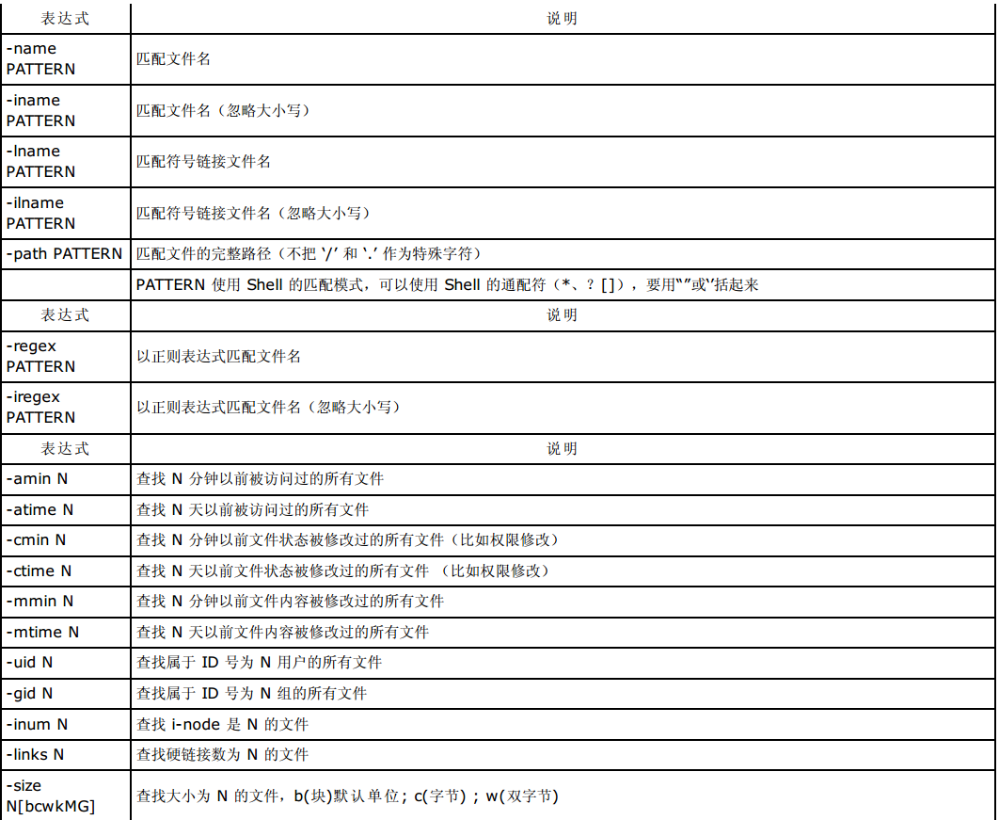
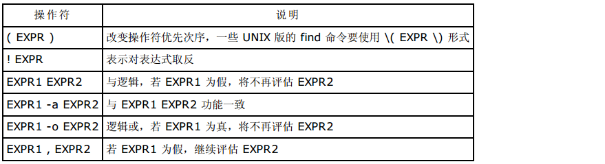
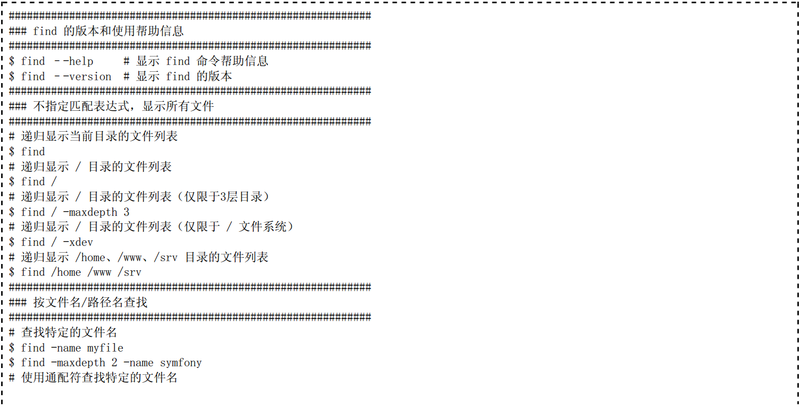
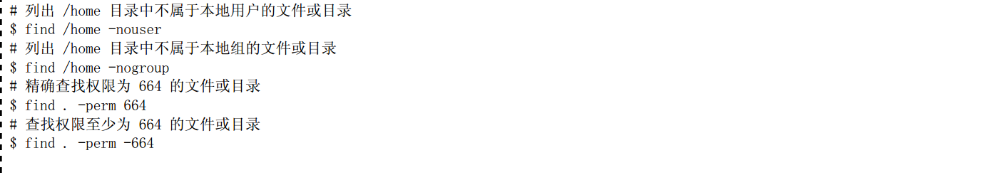

文件查找¶
find¶
1、find 命令的格式
find 命令用于在文件系统中查找满足条件的文件。find 命令功能强大，提供了相当多的查找条件。find 命令还可以对查找到的文件做操作，如执行 Shell 命令等。
find 命令的格式是：

不带任何参数的 find 命令将在屏幕上递归显示当前目录下的文件列表。下面给出一些常用的表达式的解释。
2、选项表达式

3、条件匹配表达式

4、动作表达式

5、组合条件表达式
在书写表达式时，可以使用逻辑运算符与、或、非组成的复合条件，并可以用()改变默认的操作符优先级。下面以优先 级由高到低列出可用的逻辑操作符。若以空格作为各个表达式的间隔符，则各个表示式之间是与关系。
6、find 命令使用举例
 1)find ./ -type f -name “*.txt” |xargs -i cp {} tmp/
2)用shell查询以“.”结尾的文件，并加上后缀“.ts”
find ./ -name “*.” exec mv {} {}ats ;
3)查找所有具有suid的文件
find / -perm -4100 -exec ls -l {} ;
find / -type f -perm -u=s
4)查找所有sgid的文件
find / -perm -2010 -exec ls -l {} ;
5)查找同时具有suid和sgid属性的文件
find / -perm -6110 -exec ls -l {} ;
6)find . -type f -perm 6000 #完全匹配
find . -type f -perm -6000 #有1的位置必须一样
find . -type f -perm +6000 #只要有其中一个有1的匹配就行
这些8进制的权限对比的时候要换成2进制形式)
7)查找含有sgid权限位的目录
find / -type f or type d -perm 2000
find / -type f or type d -perm -g=s
8)查找含有tickty权限位的目录
find / -type d -perm 1000
9)查看危险目录
find / -perm -222 -type d
find / -perm -o+w -tye d
Locate¶
locate -r “ls$”
locate -r “^ls”
locate -r ‘^/bin.*ls$’
locate -r ‘.*/bin.*<passwd$’ #<passwd 表示以passwd单词开头
locate -r ‘.*/bin.*<passwd>’ #包含passwd单词即可